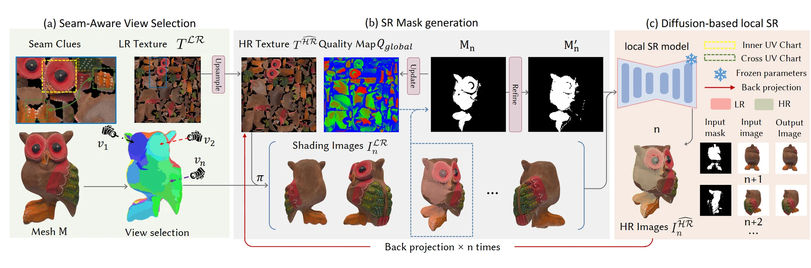
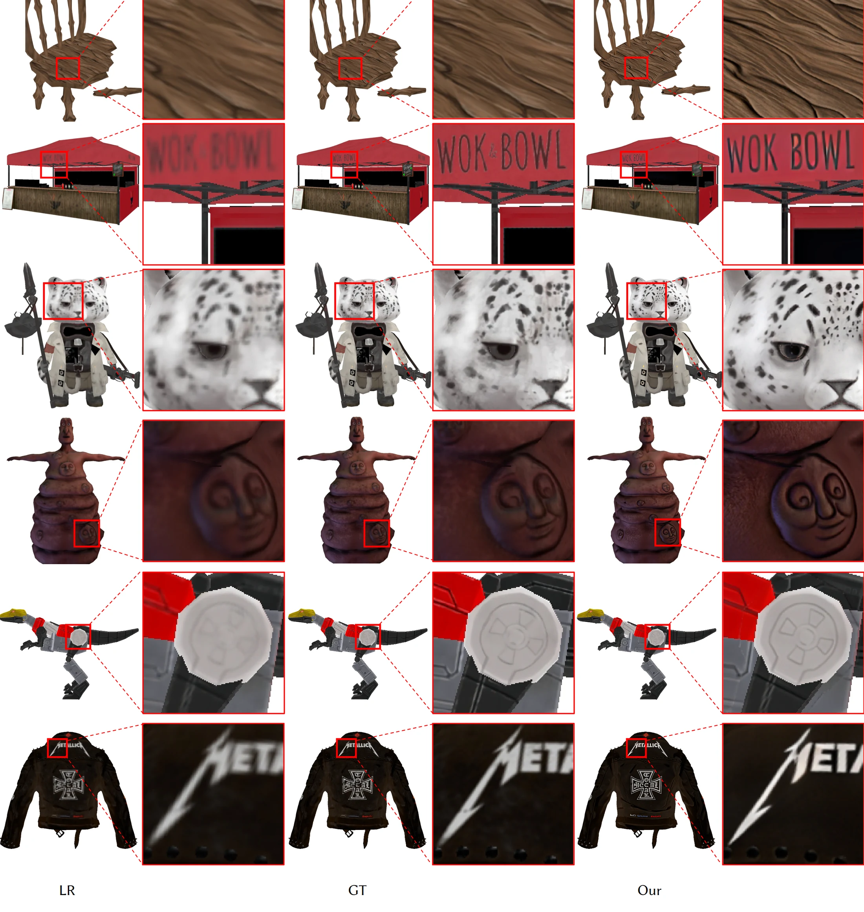
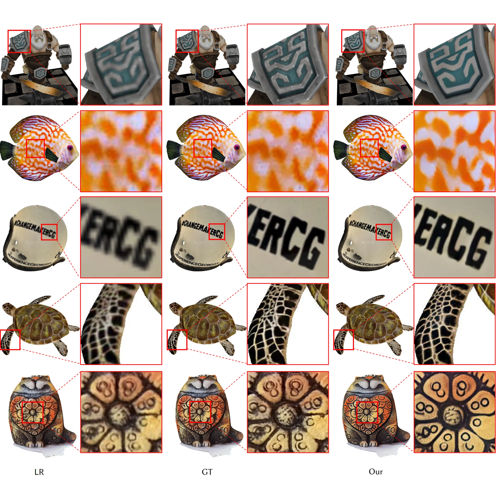
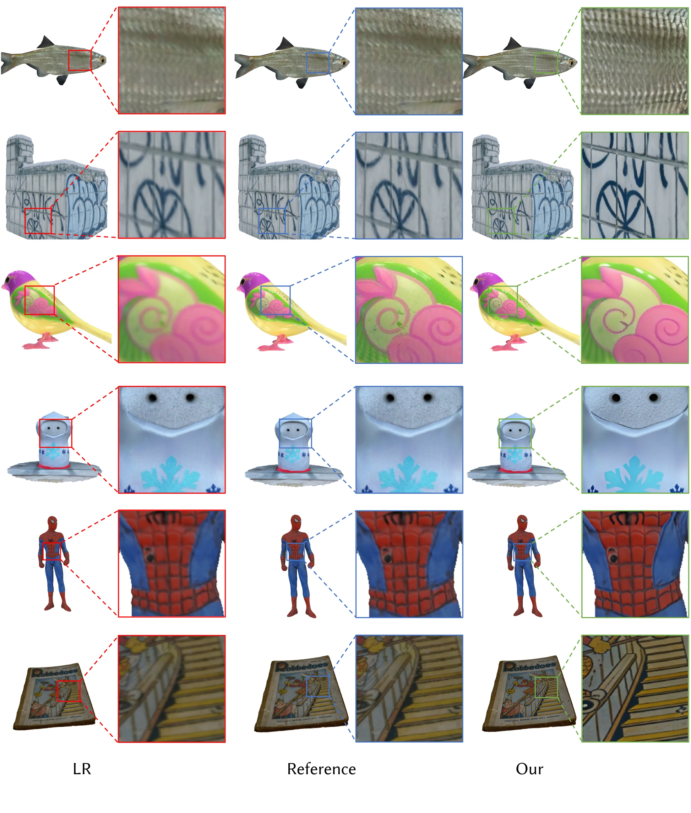
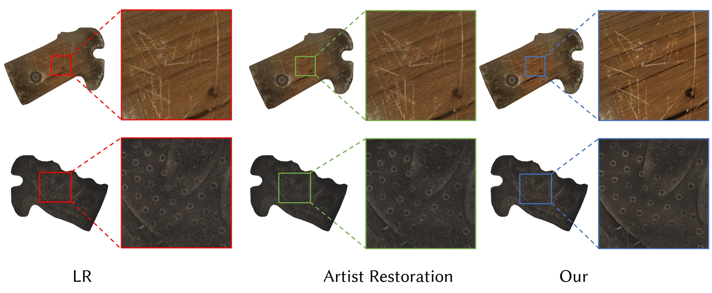

Numerous 3D assets are discarded due to low texture resolution, while current super-resolution models ignore texture maps and focus on natural images. An efficient and generalizable texture super-resolution model can revitalize a large corpus of aging yet valuable assets across industries such as film and video games. We present Texture++, a novel framework for texture super-resolution, which enhances the low-resolution textures of assets to produce high-resolution, high-quality results.
Specifically, we reformulate the task of super-resolution in UV space into performing it across multiple rendered views and merging the outputs. Firstly, to achieve more complete and continuous textures in the view space, we propose an adaptive view selection strategy to integrate textures dispersed across UV texture patches. Furthermore, we introduce a quadtree-based texture region organization method for combining super-resolved textures from different viewpoints, providing masks to distinguish regions that require improvement. Finally, we design a diffusion-based super-resolution model that enhances the texture resolution for specified masked regions, seamlessly integrating with surrounding regions.
Through comprehensive evaluations, we demonstrate that our approach yields textures with substantially improved detail and coherence over existing methods.
Starting from a bilinearly upscaled texture, Texture++ iterates: pick the right views, nominate the regions worth updating, super-resolve them locally, and project the result back into the texture map.

UV unwrapping cuts a continuous surface into isolated charts, so multi-view updates can
assign different high-frequency details to the same area and produce seams. We select a
frontal canonical view per chart from its area-weighted average normal,
v* = Σ AiNi / ‖Σ AiNi‖, recursively
splitting charts that span highly curved surfaces. Views are also selected across
charts along seam strips, then consolidated by clustering and visibility culling so that a
continuous pattern is super-resolved consistently within a single view.
Updating every pixel repeatedly blurs the texture, so we maintain a global quality map and
only revisit regions that can actually improve. Per-pixel quality is
Q = max(0, cos(v*·N)) / d², which favors frontal, close observations. Raw
masks are fragmented, and jagged boundaries get misread as texture, so a
quadtree recursively merges them — homogeneous nodes terminate early and
mixed nodes are consolidated — into clean rectangular blocks.
A Stable Diffusion 2.1-base U-Net is fine-tuned with two LoRA modules. The latent is
concatenated with the downsampled mask as a 5-channel input, and the model predicts a latent
residual instead of running a denoising schedule:
zfinal = z − Δz ⊙ M. Training minimizes a masked MSE plus a masked
LPIPS loss, so enhancement stays inside the mask and the boundary remains seamless.
The locally super-resolved view is projected directly back onto the HR texture — a direct projection rather than a slow optimization-based refinement. Because updates are constrained by the mask and the global quality map only ever increases, each iteration monotonically accumulates detail until the final high-resolution asset is produced.
Evaluated at 4× upsampling on roughly 50 diverse 3D assets from TRELLIS and Sketchfab, covering scene-level models and objects with complex textures.
Table 1. Quantitative comparison with state-of-the-art methods for 4× texture super-resolution. Best results are highlighted.
| Method | PSNR (↑) | SSIM (↑) | LPIPS (↓) | DISTS (↓) | Time (s) (↓) |
|---|---|---|---|---|---|
| DiffBIR | 35.9406 | 0.9292 | 0.1067 | 0.1056 | 586.2 |
| PBR-SR | 37.4186 | 0.9503 | 0.0802 | 0.0741 | 757.8 |
| Elevate3D | 22.8528 | 0.8583 | 0.1639 | 0.2114 | 3145.0 |
| HYPIR | 33.3778 | 0.8997 | 0.1066 | 0.0996 | 48.0 |
| OSEDiff | 31.6975 | 0.9168 | 0.0959 | 0.0964 | 108.6 |
| PiSASR | 33.1539 | 0.9159 | 0.0866 | 0.0864 | 111.4 |
| InvSR | 30.5382 | 0.8789 | 0.1281 | 0.1123 | 42.0 |
| Text2Tex | 27.5001 | 0.8855 | 0.1405 | 0.1272 | 321.5 |
| Paint3D | 24.3583 | 0.8300 | 0.1826 | 0.1570 | 130.4 |
| MVPaint | 20.9008 | 0.7098 | 0.2581 | 0.1872 | 215.6 |
| Ours | 37.5277 | 0.9524 | 0.0637 | 0.0736 | 94.4 |
Texture++ attains the best PSNR, SSIM, LPIPS and DISTS among all compared methods. It is also the third-fastest overall, at 94.4 s per asset against 757.8 s for PBR-SR and 3145.0 s for Elevate3D — super-resolution runs on 1K rendered views with a single-step model, rather than on the 2K texture with an iterative pipeline.




If you find Texture++ useful in your research, please consider citing our work.
@misc{wang2026textureelevating3dasset, author = {Shuaiwei Wang and Shi Li and Jieting Xu and Yuchi Huo and Qi Wang and Wenting Zheng and Rengan Xie}, title = {Texture++: Elevating 3D Asset Texture Resolution with a Region-Aware Diffusion Model}, year = {2026}, eprint = {2607.21504}, archivePrefix = {arXiv}, primaryClass = {cs.CV}, url = {https://arxiv.org/abs/2607.21504} }